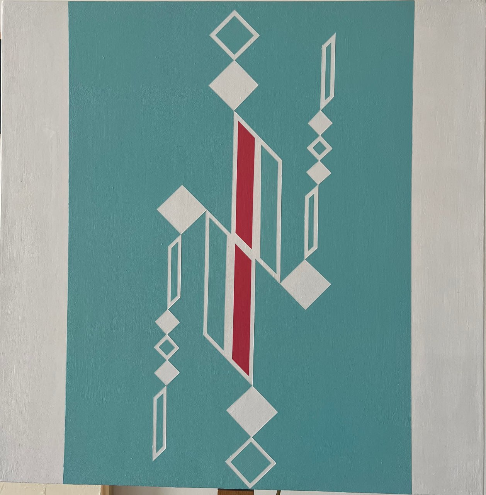
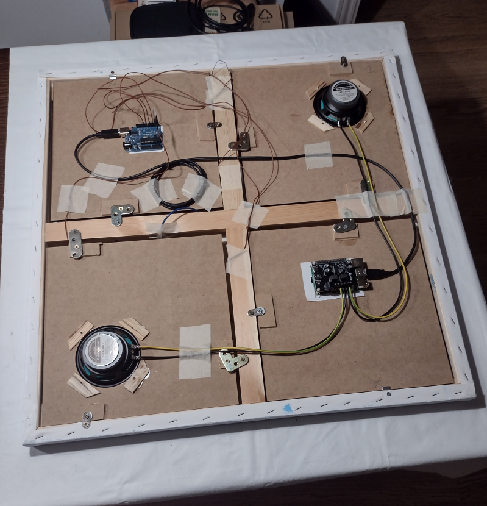

Interactive paintings that transform touch into sound.
Overview
The visual artist Dora Motèque and I are collaborating on an extraordinary project that merges art and technology in a truly unique way. Together we are the Perceptrum Duo. The shapes in these paintings are inspired by Persian characters and musical notes, creating a visual language that is both poetic and meaningful. What sets this project apart is its interactivity: the paintings are equipped with sensors that respond to touch. Yes, you heard it right, when you touch the artwork, it produces sound! This innovative approach transforms the traditional experience of a painting. Instead of passively observing the artwork, you become an active participant, performing with it to create a harmonious fusion of visual and auditory art. It's an entirely new way to engage with and experience art!
Check out our YouTube playlist for captivating videos that showcase the Sounding Canvas in action and discover how touch brings these works of art to life.
How they look
The following picture shows the second canvas of the series, on the artist's webpage you can find higher quality photos and descriptions.

Second Canvas of the Series.
My duty here is to reveal the "Behind the Scenes" of this kind of artwork, let's start !.
Where's the hack
The hack is in the back !
In the next picture you can see how the sensors are cabled and fixed to the canvas, they are made using resistors and aluminum foil.
How the sensors are connected.
Then a wooden cover has been mounted upon to host loudspeakers and boards.

The closed back of the Sounding Canvas.
Novelty
SoundingCanvas represents a unique convergence of visual art, tactile interaction, and sound synthesis. Unlike traditional interactive artworks that rely on pre-programmed responses or isolated media, SoundingCanvas integrates capacitive sensing, real-time audio manipulation, and semantic image-sound mapping into a single, coherent system.
At its core, SoundingCanvas transforms static visual elements into dynamic sonic expressions. Touching the canvas activates a complex chain of processes: sensor data is interpreted in real time, user interaction is learned and modeled through adaptive systems (such as Markov models and neural networks), and the result is expressed sonically using both pre-recorded audio and signal processing techniques.
What sets SoundingCanvas apart is not only its technological integration but its conceptual depth. The project uses techniques from artificial intelligence, physics-inspired decision making and computer vision to create a new semantic space where visual stimuli and audio output are interlinked. This allows each canvas to behave like a living instrument, one that reacts to human presence and evolves through interaction.
Additionally, the installation is designed for autonomy and robustness, capable of operating continuously with automatic startup, thermal protection, and minimal user intervention. This makes SoundingCanvas suitable for gallery exhibitions and long-term deployments, without compromising artistic complexity.
SoundingCanvas is more than a fusion of disciplines,it is a redefinition of the canvas itself: not as a surface to observe, but as an interface to experience, question, and transform.
A Social Artwork
SoundingCanvas is not just a tactile and sonic artwork , it is a living, social interface. Each canvas can communicate in real time with others, creating a poetic bridge between distant spaces and people.
This is enabled by a networked system where each unique canvas acts as a module in a network. When canvases are linked, they engage in a Modular Dialogue, a dynamic conversation in which the gestures on one canvas influence the sonic output of another.
On the concept of "Modular Dialogue" and "Variations" there is a dedicated page that the reader is strongly invited to visit: VISIT IT HERE
Imagine a mother in Italy, on a quiet Sunday evening. She gently touches her canvas, sending a signal across the network. In that moment, her son’s canvas in the United States and her daughter’s in Germany come to life , playing soft, familiar sounds that signal her presence. Touched by the gesture, the children respond: each places a hand on their own canvas, and the mother’s artwork sings back to her, echoing their affection across continents.
This is the essence of SoundingCanvas: a sensory dialogue that transcends geography, a way of saying “I’m here” without words, through sound, space, and touch.